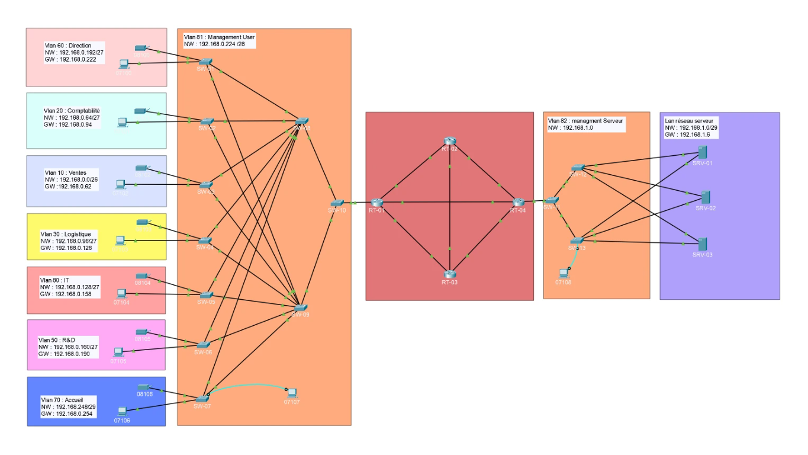
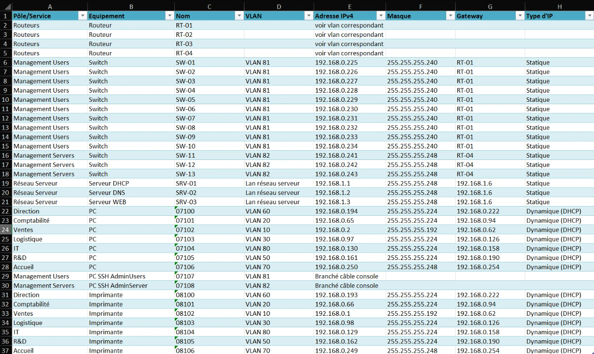
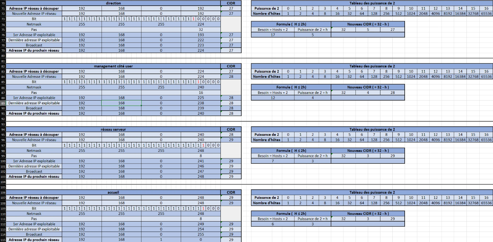

Architecture Réseau & Services
Conception d'une infrastructure d'entreprise dans Cisco Packet Tracer : réseaux séparés par service, plan d'adressage IPv4 calculé en VLSM et zone serveur dédiée aux services DHCP, DNS et Web.
- Cisco Packet Tracer
- VLAN 802.1Q
- IPv4 · VLSM
- Routage inter-VLAN
- DHCP
- DNS
- Services Web
Présentation
Un réseau d'entreprise organisé par zones
La maquette relie quatre routeurs, des switches d'accès et un réseau de serveurs distinct. Les postes et imprimantes sont regroupés par service dans des VLAN dédiés. Cette segmentation facilite la lecture de l'architecture et permet de contrôler le routage entre les différents sous-réseaux.
Segmentation par VLAN
Ventes, comptabilité, logistique, R&D, direction, accueil et informatique disposent chacun de leur réseau logique.
Routage entre réseaux
Les routeurs interconnectent les segments utilisateurs, les réseaux d'administration et la zone serveur.
Services centralisés
Un serveur DHCP, un serveur DNS et un serveur Web sont placés sur un sous-réseau serveur dédié.
Administration séparée
Deux VLAN distincts isolent la gestion des équipements côté utilisateurs et côté serveurs.
Volet complémentaire · sécurité
Renforcer l'administration d'un routeur Cisco
Le rapport complète le travail de topologie par un exercice dédié au durcissement d'un routeur Cisco 1941 : protéger les accès locaux et distants, limiter les tentatives de connexion et n'autoriser que l'administration chiffrée à distance.
Administration SSH
SSH version 2 avec clés RSA de 2 048 bits; les accès distants sont limités à SSH et le délai d'attente SSH est réglé à 60 secondes.
Accès protégés
Authentification locale, politique de mots de passe d'au moins 12 caractères et délai d'inactivité de trois minutes sur la console et les sessions distantes.
Protection contre les essais répétés
Après trois échecs dans une période de cinq minutes, les nouvelles tentatives sont bloquées pendant deux minutes.
Bannières et console
Des messages d'avertissement encadrent la connexion; la console est configurée pour garder les journaux lisibles pendant les commandes.
Retour d'expérience : le routeur a redémarré plusieurs fois pendant la séance. L'équipe a dû refaire la configuration et n'a pas pu conserver toutes les captures des vérifications; le rapport indique que les réglages ont été contrôlés en séance. La persistance de la configuration après redémarrage n'est donc pas démontrée.
Plan d'adressage IPv4
Des sous-réseaux dimensionnés en VLSM
Le plan répartit le bloc 192.168.0.0/24 selon les besoins de chaque service. Les passerelles indiquées ci-dessous sont celles prévues pour les réseaux utilisateurs; les postes et imprimantes reçoivent leur configuration par DHCP.
Réseaux des services
VLAN 10 · Ventes — 192.168.0.0/26 · passerelle 192.168.0.62
VLAN 20 · Comptabilité — 192.168.0.64/27 · passerelle 192.168.0.94
VLAN 30 · Logistique — 192.168.0.96/27 · passerelle 192.168.0.126
VLAN 80 · IT — 192.168.0.128/27 · passerelle 192.168.0.158
Autres réseaux utilisateurs
VLAN 50 · R&D — 192.168.0.160/27 · passerelle 192.168.0.190
VLAN 60 · Direction — 192.168.0.192/27 · passerelle 192.168.0.222
VLAN 70 · Accueil — 192.168.0.248/29 · passerelle 192.168.0.254
Réseaux d'administration
VLAN 81 · Management Users — 192.168.0.224/28
VLAN 82 · Management Serveurs — 192.168.0.240/29
Les interfaces de gestion des switches utilisent des adresses statiques.
LAN des serveurs
Réseau 192.168.1.0/29 · passerelle 192.168.1.6
SRV-01 DHCP · 192.168.1.1
SRV-02 DNS · 192.168.1.2
SRV-03 Web · 192.168.1.3
Documentation visuelle
Topologie et préparation du réseau
Les captures présentent la maquette, le plan d'adressage des équipements et le calcul des sous-réseaux.





